Blocco successioni e serie del programma di Udine (MATH-03/A). Dopo i limiti di funzioni (Lezione 3) e le derivate (Lezione 4), qui impariamo a fare limiti di successioni e a dare senso all'idea di sommare infiniti numeri: le serie numeriche, con i loro criteri di convergenza, e un primo sguardo alle serie di potenze.
1. Che cos'è una successione
Una successione è una lista ordinata e infinita di numeri: un primo termine, un secondo, un terzo… uno per ogni numero naturale n. Si scrive an e si legge “termine n-esimo”. È come una funzione che a ogni n = 1, 2, 3, … associa un numero.
Aritmetica: 2, 5, 8, 11, … (si aggiunge sempre lo stesso passo).
Geometrica: 1, ½, ¼, ⅛, … (si moltiplica sempre per lo stesso fattore, qui q = ½).
La più usata: an = 1/n, cioè 1, ½, ⅓, ¼, … che si avvicina a zero.
2. Il limite di una successione
La domanda chiave è: dove vanno a finire i termini quando n diventa enorme? Se si avvicinano sempre di più a un numero L, la successione è convergente e L è il suo limite. Se crescono senza fermarsi è divergente; se saltano senza stabilizzarsi è indeterminata.
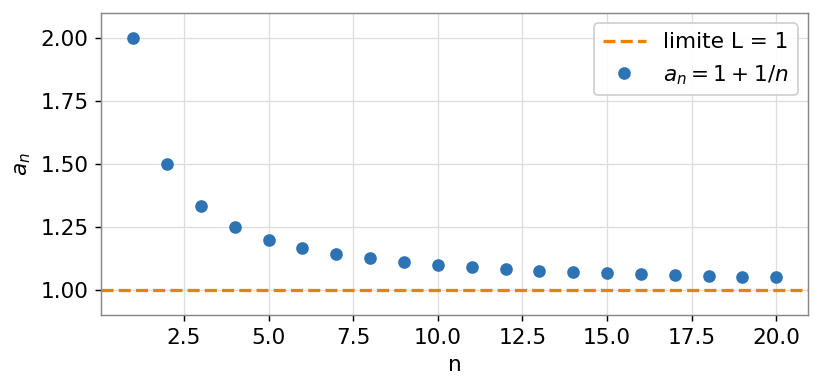
Fig. 1 — La successione aₙ = 1 + 1/n: i punti scendono e si avvicinano sempre più alla retta L = 1. La successione converge a 1.
3. Successioni notevoli da conoscere
| Successione | Comportamento |
|---|---|
| 1/n | → 0 |
| q ⁿ con |q| < 1 | → 0 |
| q ⁿ con |q| > 1 | → +∞ (diverge) |
| (1 + 1/n) ⁿ | → e ≈ 2,718 |
Il caso geometrico qn è il più importante: tutto dipende da quanto vale q. Se |q| < 1 i termini si spengono verso zero; se |q| > 1 esplodono.
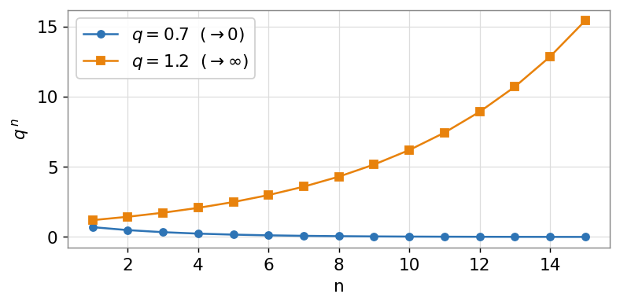
Fig. 2 — La geometrica qⁿ: con q = 0,7 i termini vanno a zero; con q = 1,2 crescono senza limite. La soglia è |q| = 1.
4. Dalla successione alla serie
Una serie è il tentativo di sommare tutti i termini di una successione: a₁ + a₂ + a₃ + … all'infinito. Non potendo sommare davvero infiniti numeri, si sommano i primi N e si guarda dove va questo totale al crescere di N. Il totale dei primi N termini si chiama somma parziale SN.
S_N = a₁ + a₂ + … + a_N
Se le somme parziali SN tendono a un numero finito S, la serie converge e S è la sua somma. Se crescono senza limite, la serie diverge. In pratica: lo studio di una serie è lo studio del limite della successione delle sue somme parziali.
5. La serie geometrica (l'esempio madre)
È la serie dei termini di una geometrica: 1 + q + q² + q³ + … Il suo comportamento è tutto nel valore di q:
se |q| < 1 la serie converge e la somma vale 1 / (1 − q);
se |q| ≥ 1 la serie diverge.
Esempio. Con q = ½: 1 + ½ + ¼ + ⅛ + … = 1 / (1 − ½) = 2. Ogni termine aggiunge metà di quanto manca all'obiettivo: ci si avvicina a 2 senza mai superarlo.
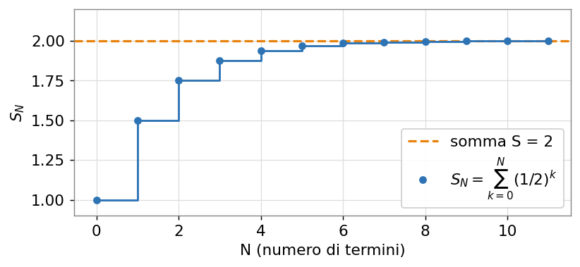
Fig. 3 — Somme parziali di 1 + ½ + ¼ + …: i “gradini” si accumulano e la somma si stabilizza a S = 2.
6. La condizione necessaria (e un tranello)
Perché una serie possa convergere, i suoi termini devono tendere a zero (an → 0). Se i termini non si spengono, sommarne infiniti dà per forza infinito. Attenzione però: è una condizione necessaria ma non sufficiente.
Il tranello classico è la serie armonica 1 + ½ + ⅓ + ¼ + … : i termini 1/n vanno a zero, eppure la somma diverge (cresce lentissima, ma senza fermarsi). Quindi “termini che vanno a zero” non basta a garantire la convergenza.
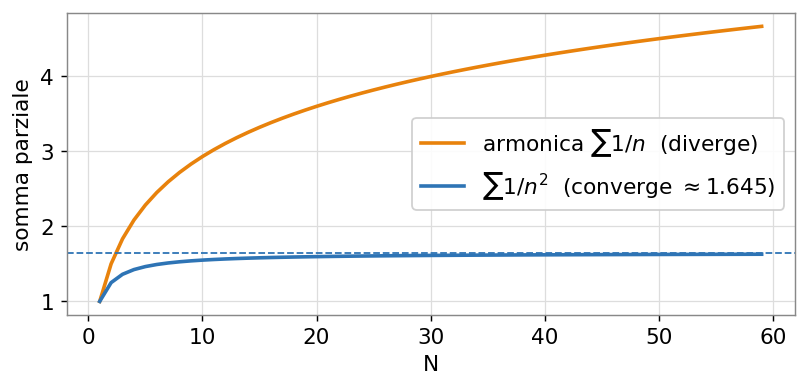
Fig. 4 — Stessa premessa (termini → 0), esiti opposti: la serie armonica ∑1/n diverge, mentre ∑1/n² converge a circa 1,645.
7. I criteri di convergenza (termini positivi)
Quando i termini sono positivi, per decidere se una serie converge si usano alcuni criteri pratici, da provare in quest'ordine:
Confronto: se an ≤ bn e ∑bn converge, converge anche ∑an.
Confronto asintotico: se an si comporta come una serie nota (spesso 1/nα), hanno lo stesso destino.
Criterio del rapporto: si calcola il limite di an+1 / an. Se < 1 converge, se > 1 diverge. Ottimo con fattoriali ed esponenziali.
Criterio della radice: si calcola il limite della radice n-esima di an. Stessa regola: < 1 converge, > 1 diverge.
Serie di riferimento — la armonica generalizzata ∑ 1/nα: converge se α > 1, diverge se α ≤ 1. È il metro con cui si confrontano moltissime altre serie.
8. Serie a segni alterni: il criterio di Leibniz
Se i termini cambiano segno a ogni passo (+, −, +, −, …), basta molto meno per convergere. Criterio di Leibniz: se i valori assoluti dei termini decrescono e tendono a zero, la serie converge.
Esempio. La serie armonica a segni alterni 1 − ½ + ⅓ − ¼ + … converge (a ln 2 ≈ 0,693), pur avendo gli stessi termini 1/n che, tutti positivi, facevano divergere la serie.
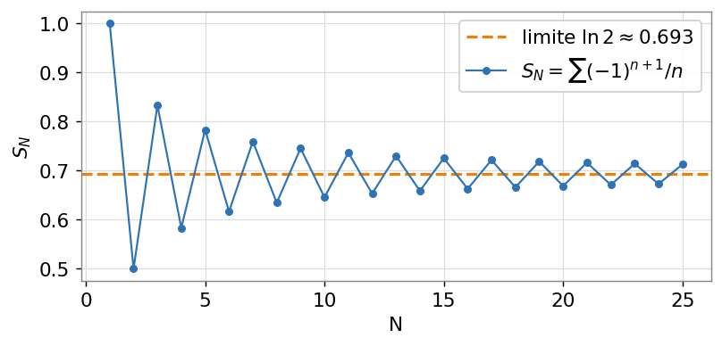
Fig. 5 — Le somme parziali oscillano sopra e sotto, con oscillazioni sempre più piccole, e convergono a ln 2 (criterio di Leibniz).
9. Un primo sguardo alle serie di potenze
Una serie di potenze è una serie i cui termini contengono le potenze di una variabile x: c₀ + c₁x + c₂x² + c₃x³ + … Non è più un solo numero, ma una funzione di x, definita là dove la serie converge.
Esiste un raggio di convergenza R: per |x| < R la serie converge, per |x| > R diverge. Il fatto notevole è che molte funzioni familiari sono una serie di potenze: per esempio
eˣ = 1 + x + x²/2! + x³/3! + …
Sommando sempre più termini (i polinomi di Taylor, Lezione 4) ci si avvicina sempre di più alla curva vera.
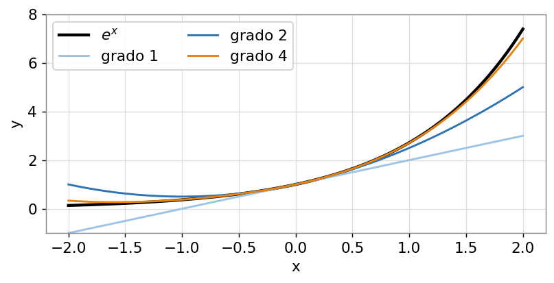
Fig. 6 — La funzione eˣ e le somme parziali della sua serie: più termini si aggiungono, meglio il polinomio incolla la curva.
10. A cosa serve in elettronica
Le serie non sono un esercizio astratto: sono il linguaggio con cui si scompongono e si approssimano i segnali.
Serie di Fourier: un segnale periodico si scrive come somma (serie) di sinusoidi. È la base della teoria dei segnali del secondo anno.
Serie geometrica: compare nelle reti a reazione e nel calcolo di impedenze e guadagni con anelli ripetuti.
Serie di potenze: linearizzare un componente non lineare attorno a un punto di lavoro significa tenere i primi termini della sua serie.
Errori tipici da evitare
Concludere che una serie converge solo perché i termini vanno a zero: è necessario, non sufficiente (vedi l'armonica).
Usare la formula 1/(1 − q) senza controllare che sia |q| < 1: fuori da quel caso la serie geometrica diverge.
Confondere la successione (la lista dei termini) con la serie (la somma dei termini): sono due limiti diversi.
Applicare i criteri del rapporto o della radice a serie a segni alterni sui termini con segno: vanno usati sui valori assoluti, e per l'alternanza c'è Leibniz.
Che criterio uso?
La regola d'oro: non si sceglie a intuito — è la forma del termine aₙ che decide lo strumento. Guardi com'è fatto aₙ e segui lo schema dall'alto verso il basso, fermandoti al primo caso che scatt
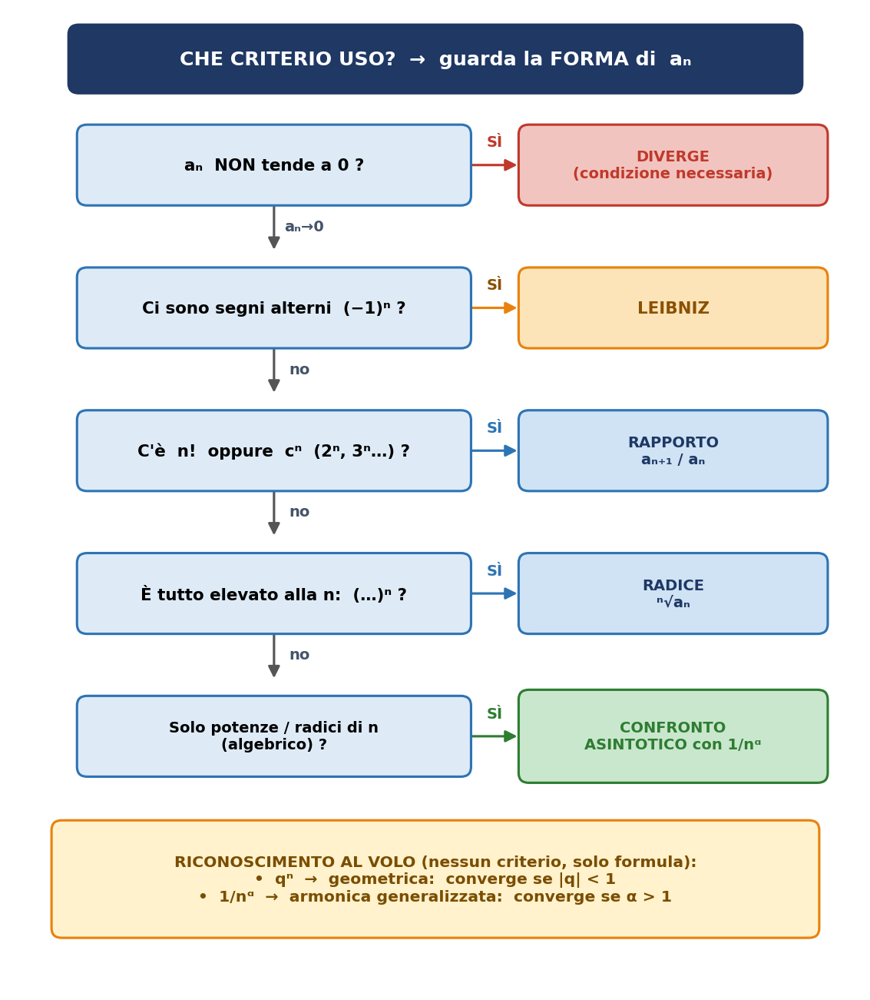
La stessa cosa in tabella
| Se in aₙ vedi… | Usa | Perché |
|---|---|---|
| (−1)n (segni alterni) | Leibniz | basta che |termini| scendano e vadano a 0 |
| n! oppure cn (2n, 3n…) | Criterio del rapporto | dividendo termini consecutivi, fattoriali ed esponenziali si semplificano |
| tutto il termine è (…)n | Criterio della radice | la radice n-esima annulla l'esponente n |
| solo potenze e radici di n(niente n! né cn) | Confronto asintotico | lo confronti con 1/nα, di cui sai già tutto |
Prima ancora: lo riconosci a colpo d'occhio?
| Forma | Nome | Converge se… |
|---|---|---|
| qn | geometrica | |q| < 1 → somma 1/(1−q) |
| 1/nα | armonica generalizzata | α > 1 |
In questi due casi non serve nessun criterio: applichi direttamente la formula.
I tuoi esercizi, letti con lo schema
| Serie | Come la riconosci |
|---|---|
| ∑ 1/n² | solo potenze di n → armonica, α = 2 → converge |
| ∑ 1/√n | armonica, α = 1/2 → diverge |
| ∑ n / 2n | c'è 2n (esponenziale) → rapporto |
| ∑ (−1)n+1 / n | segni alterni → Leibniz |
Schema generale di riferimento
A · Successioni
Lista infinita di numeri an, uno per ogni n. Interessa dove tendono i termini quando n → ∞.
I tre destini
| Comportamento | Esempio | Come si dice |
|---|---|---|
| tende a L finito | 1/n → 0 | converge |
| tende a ±∞ | 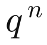 (q>1) → +∞ |
diverge |
| oscilla | (−1)n | indeterminata |
Limiti notevoli
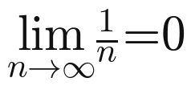
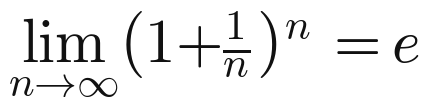
Geometrica secondo q:
| Valore di q | Limite |
|---|---|
| |q| < 1 | → 0 |
| q = 1 | → 1 |
| q > 1 | → +∞ (diverge) |
Tecnica per la forma ∞/∞ (rapporto di polinomi)
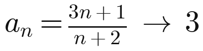
grado sopra < grado sotto → limite 0;
gradi uguali → rapporto dei coefficienti di grado massimo;
grado sopra > grado sotto → limite ±∞.
B · Serie numeriche
Somma di tutti i termini. Si studia con le somme parziali SN = a₁+…+aN: la serie converge se SN tende a un numero finito.
Serie geometrica
Converge se e solo se |q| < 1. Somma secondo l'indice di partenza:
| Da n = 0 | Da n = 1 |
|---|---|
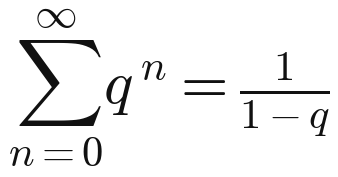 |
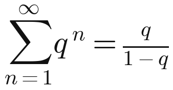 |
Condizione necessaria (non sufficiente)
Se la serie converge, allora
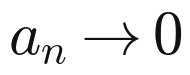
. Ma non basta: l'armonica ∑ 1/n ha termini → 0 e diverge lo stesso.Serie armonica generalizzata
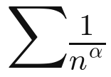
converge se α > 1, diverge se α ≤ 1. È il metro di confronto.C · Criteri di convergenza (termini positivi)
| Criterio | Come si usa | Verdetto |
|---|---|---|
| Confronto | 0 ≤ an ≤ bn | ∑bn conv → ∑an conv |
| Confronto asintotico | 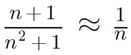 |
stesso carattere di 1/nᵅ |
| Rapporto | 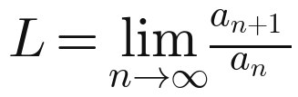 |
L<1 conv · L>1 div · L=1 nulla |
| Radice | 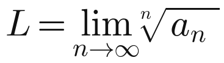 |
L<1 conv · L>1 div · L=1 nulla |
Rapporto → con fattoriali ed esponenziali; radice → con potenze n-esime.
D · Serie a segni alterni — Leibniz
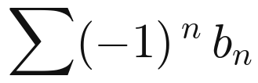
con bn > 0 converge se bn decresce e tende a 0.E · Serie di potenze
Serie nelle potenze di x: è una funzione di x, con un raggio di convergenza R (converge per |x| < R). Molte funzioni note lo sono:
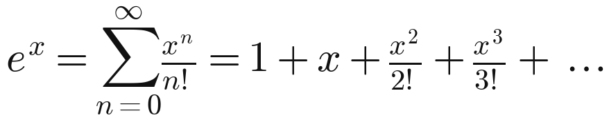
Che criterio uso? (in breve)
i termini non tendono a 0 → diverge subito;
segni alterni (−1)n → Leibniz;
c'è n! o cⁿ → criterio del rapporto;
tutto elevato alla n, (…)ⁿ → criterio della radice;
solo potenze/radici di n → confronto asintotico con 1/nα;
riconoscibili al volo: qⁿ (geometrica) e 1/nα (armonica).
Esercizi svolti
Livello 1 · Limiti di successioni
Esercizio 1
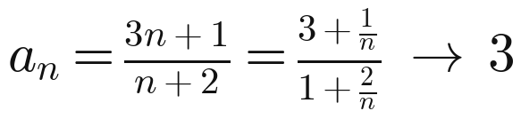
Forma ∞/∞: raccolgo n sopra e sotto; i termini con 1/n vanno a 0.
Risultato: il limite è 3 (stesso grado → rapporto dei coefficienti di grado massimo).
Esercizio 2
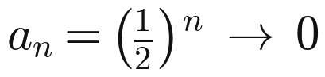
Geometrica con q = 1/2 e |q| < 1 → i termini si spengono a zero.
Risultato: il limite è 0 (1/2 è solo il primo termine, non il limite).
Esercizio 3
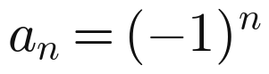
I termini saltano: −1, +1, −1, +1, … (pari → +1, dispari → −1).
Due sotto-successioni con valori diversi → il limite non esiste.
Risultato: indeterminata (oscilla: non converge e non diverge a ±∞).
Livello 2 · Carattere di una serie
Esercizio 4
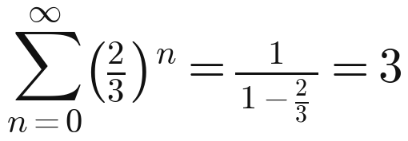
Serie geometrica con q = 2/3; |q| < 1 → converge. Somma da n = 0: 1/(1 − q).
Risultato: converge, somma = 3.
Esercizio 5
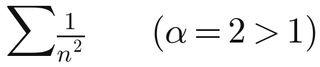
Armonica generalizzata: converge se α > 1. Qui α = 2.
Risultato: converge.
Esercizio 6
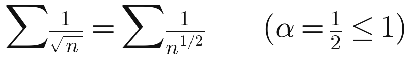
Riscrivo la radice come potenza 1/2 → α = 1/2 ≤ 1 (i termini → 0, ma troppo lentamente).
Risultato: diverge.
Livello 3 · Criteri all'opera
Esercizio 7
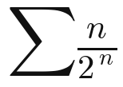
C'è l'esponenziale 2ⁿ → criterio del rapporto:
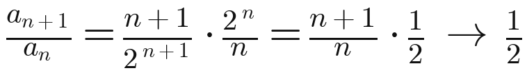
Risultato: L = 1/2 < 1 → converge.
Esercizio 8
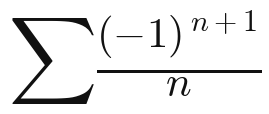
Segni alterni → criterio di Leibniz (sui termini senza segno, 1/n).
1/n decresce ✓ e 1/n → 0 ✓.
Risultato: converge (a ln 2 ≈ 0,693; la stessa serie a segni tutti + divergeva).
Esercizio 9
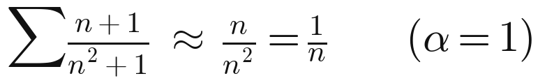
Solo potenze di n → confronto asintotico. Dopo la semplificazione resta 1/n, cioè α = 1.
Risultato: diverge (conta il grado che resta DOPO la semplificazione).
Esercizio 10
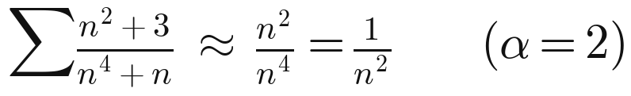
Confronto asintotico: dopo la semplificazione resta 1/n², cioè α = 2 > 1.
Risultato: converge.
Metodi chiave (da ricordare)
Limite ∞/∞: raccogli la potenza di n più alta sopra e sotto, semplifica, i termini 1/n → 0.
Forma indeterminata (∞/∞, 0/0) = “devo lavorarci”, non “senza risposta”: dopo i conti il limite spesso esiste.
Scelta del criterio dalla forma di aₙ: segni alterni → Leibniz; n! o cⁿ → rapporto; (…)ⁿ → radice; solo potenze di n → confronto asintotico.
Confronto asintotico: conta l'esponente α che resta DOPO aver semplificato, non quello di partenza.